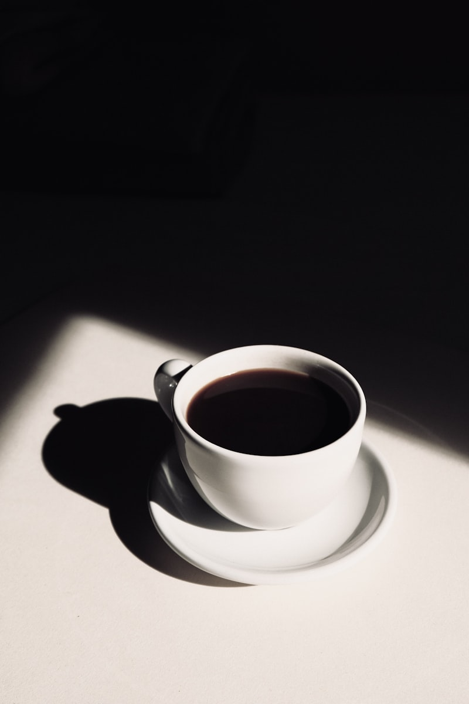
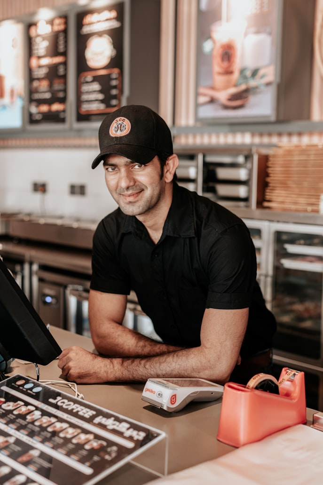
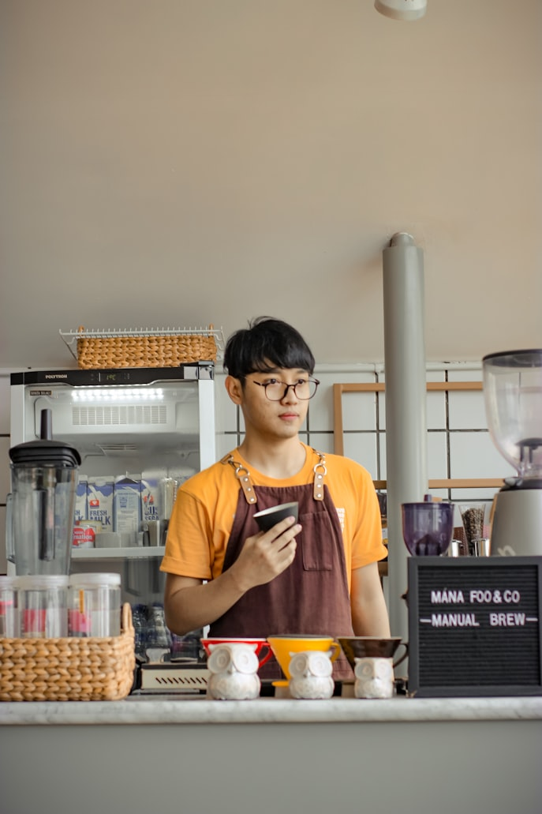
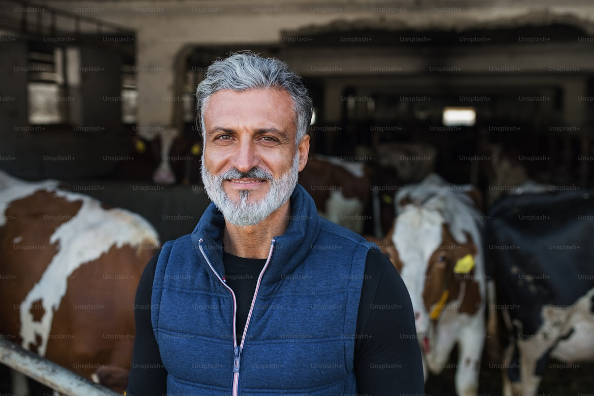

Perjalanan kopi lokal Indonesia dari petani hingga sampai ke cangkir Anda.

Kedai Kopi Nusantara lahir dari kecintaan kami terhadap kopi Indonesia dan rasa hormat kami kepada para petani yang bekerja dengan sepenuh hati di kebun-kebun kopi Nusantara. Perjalanan ini bermula saat kami mengunjungi dataran tinggi penghasil kopi dan melihat langsung bagaimana kopi ditanam, dipanen, hingga diolah dengan penuh ketelatenan.
Dari pengalaman itu, kami menyadari bahwa secangkir kopi yang nikmat bukan hanya soal teknik penyeduhan atau mesin yang modern, tetapi juga tentang cerita panjang para petani yang menjaga kualitas setiap biji kopi. Karena itu, kami berkomitmen menghadirkan kopi lokal terbaik sekaligus membangun hubungan yang adil dan berkelanjutan dengan mitra petani.
Kedai ini kami dirikan agar penikmat kopi di kota dapat menikmati cita rasa asli Indonesia, sekaligus ikut menghargai kerja keras para petani lokal melalui setiap pembelian.
Kami ingin menjadi UMKM kopi yang tidak hanya menjual produk, tetapi juga membawa manfaat bagi pelanggan, petani, dan lingkungan sekitar.
Menjadi kedai kopi lokal yang dikenal karena kualitas, kehangatan pelayanan, dan dukungan nyata terhadap kopi Indonesia.
Menyajikan kopi terbaik, memperluas apresiasi terhadap kopi lokal, dan menciptakan pengalaman minum kopi yang berkesan.
Kualitas, kejujuran, kerja sama, pelayanan ramah, dan komitmen untuk tumbuh bersama petani lokal.

Pendiri & Roaster
Bertanggung jawab dalam pemilihan biji kopi, proses roasting, dan pengembangan kualitas produk.

Kepala Barista
Mengatur kualitas penyajian kopi dan memastikan setiap pelanggan mendapatkan pengalaman terbaik.

Ketua Kelompok Tani Mitra
Menjadi mitra utama dalam menjaga kualitas panen dan kesinambungan pasokan kopi lokal unggulan.
Setiap cangkir kopi yang kami sajikan membawa rasa, proses, dan kerja keras dari banyak tangan yang peduli pada kualitas.